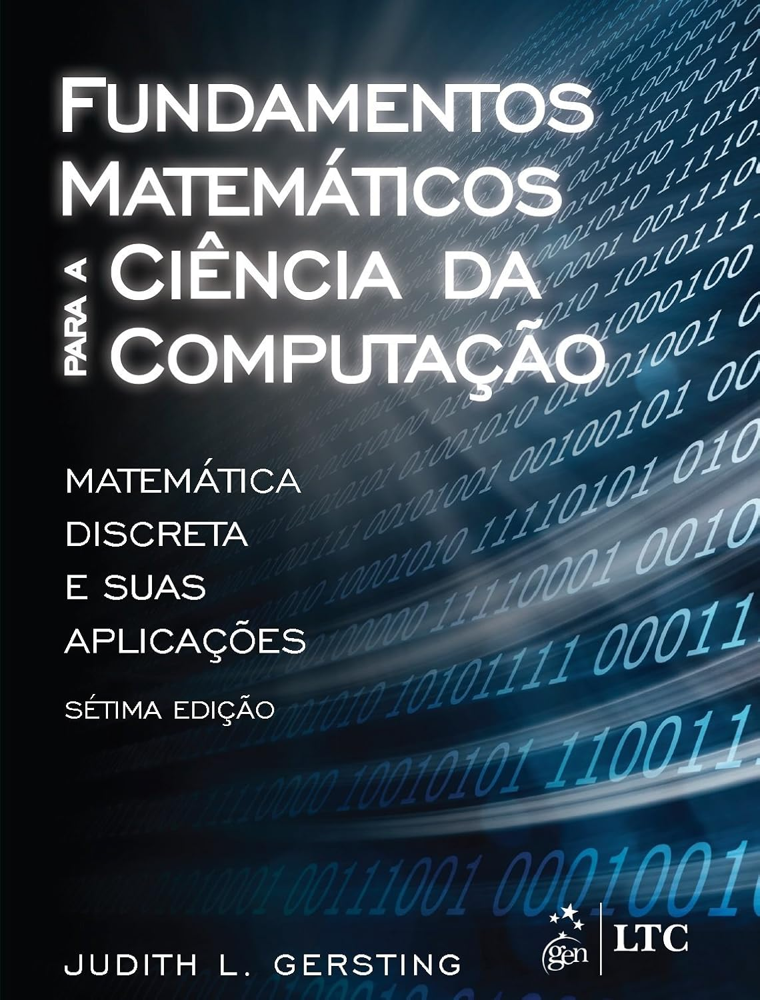

ADS - Pensamento Lógico Computacional - Ênfase em Python - 2026 - Anotações de aula
2026-02-25
Sobre estas anotações
—————————————————————————————————————————————
Estas anotações são apenas lembretes das aulas expostas em sala, durante a disciplina de Banco de dados.
0.2 Leitores de formato de arquivo EPUB para SmartPhone
—————————————————————————————————————————————

0.3 Livros Texto da Disciplina
—————————————————————————————————————————————
0.3.1 “Fundamentos matemáticos para a ciência da computação Matemática Discreta e Suas Aplicações” da autora “Judith L. Gersting”
|  |
| Autor(es) | Judith L. Gersting |
| Editora | LTC |
| Idioma | Português |
| ISBN | 978-8521632597 |
| Formato | Capa dura |
| Páginas | 749 |
| Código Biblioteca |
0.5 Fevereiro de 2026
—————————————————————————————————————————————
| Data | Dia da Semana | Aulas | Conteúdo |
|---|---|---|---|
| 25/02/2026 | Quarta-Feira | Aula 1 | Aula Inaugural |
0.6 Março de 2026
—————————————————————————————————————————————
| Data | Dia da Semana | Aulas | Conteúdo |
|---|---|---|---|
| 04/03/2026 | Quarta-Feira | Aula 2 | Introdução à Lógica de Programação - 01 | |
| 11/03/2026 | Quarta-Feira | Aula 3 | Estruturas de Controle - 02 |
| 18/03/2026 | Quarta-Feira | Aula 4 | Tipos de Variáveis |
| 25/03/2026 | Quarta-Feira | Aula 5 | Procedimentos e Funções |
0.7 Abril de 2026
—————————————————————————————————————————————
| Data | Dia da Semana | Aulas | Conteúdo |
|---|---|---|---|
| 01/04/2026 | Quarta-Feira | NP1 | PROVA |
| 08/04/2026 | Quarta-Feira | Aula 6 | Listas e Dicionários |
| 15/04/2026 | Quarta-Feira | Aula 7 | Entrada e Saída |
| 22/04/2026 | Quarta-Feira | Aula 8 | Depuração e Teste de Algoritmos |
| 29/04/2026 | Quarta-Feira | Aula 9 | Programação Orientada a Objetos – Parte 1 |
0.8 Maio de 2026
—————————————————————————————————————————————
| Data | Dia da Semana | Aulas | Conteúdo |
|---|---|---|---|
| 06/05/2026 | Quarta-Feira | Aula 10 | Programação Orientada a Objetos – Parte 2 |
| 13/05/2026 | Quarta-Feira | Aula 11 | Programação Orientada a Eventos – Parte 1 |
| 20/05/2026 | Quarta-Feira | NP2 | PROVA |
| 27/05/2026 | Quarta-Feira | SUB | PROVA SUBSTITUTIVA |